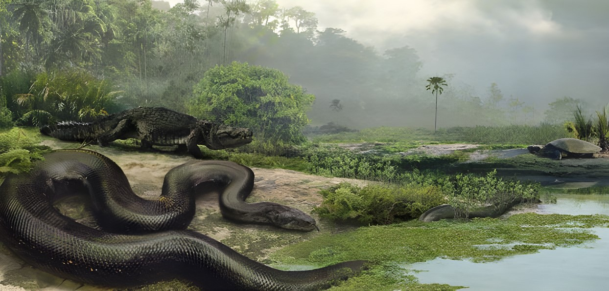
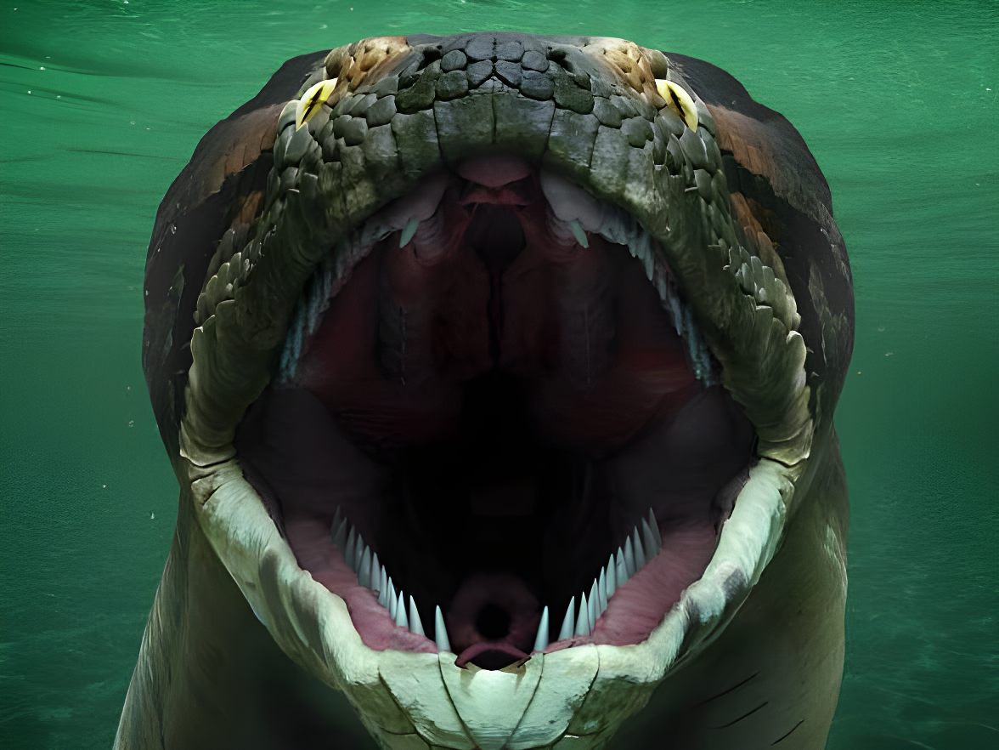
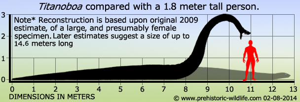
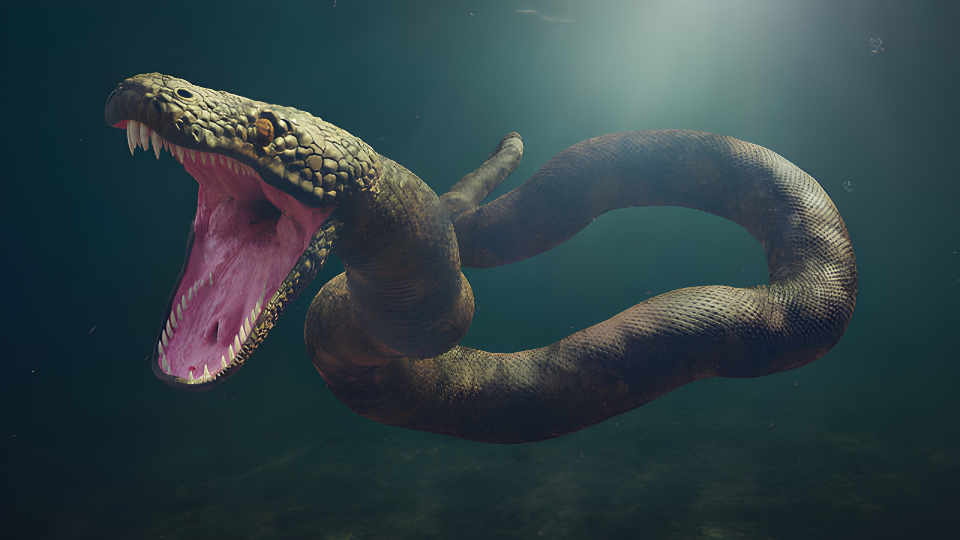
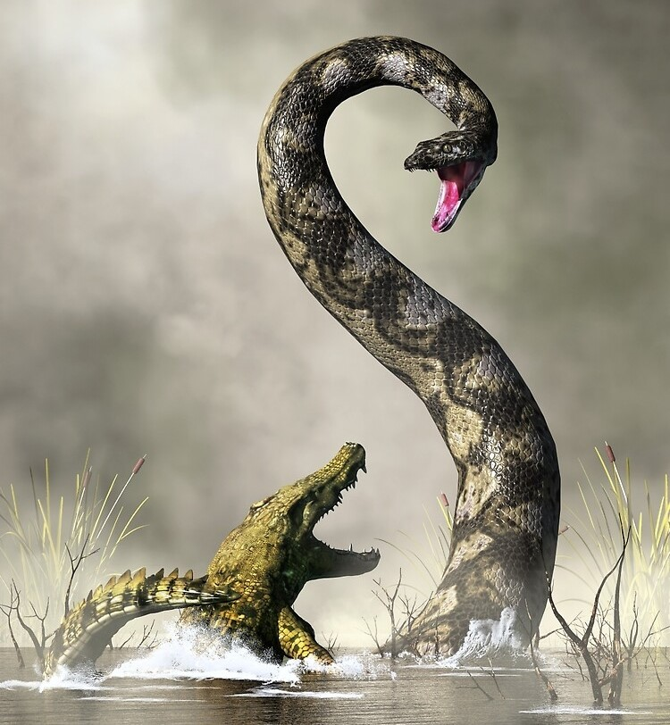
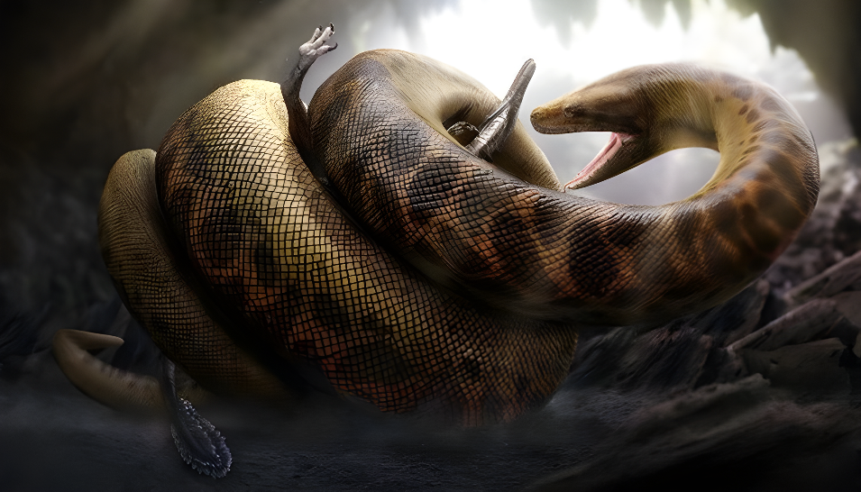
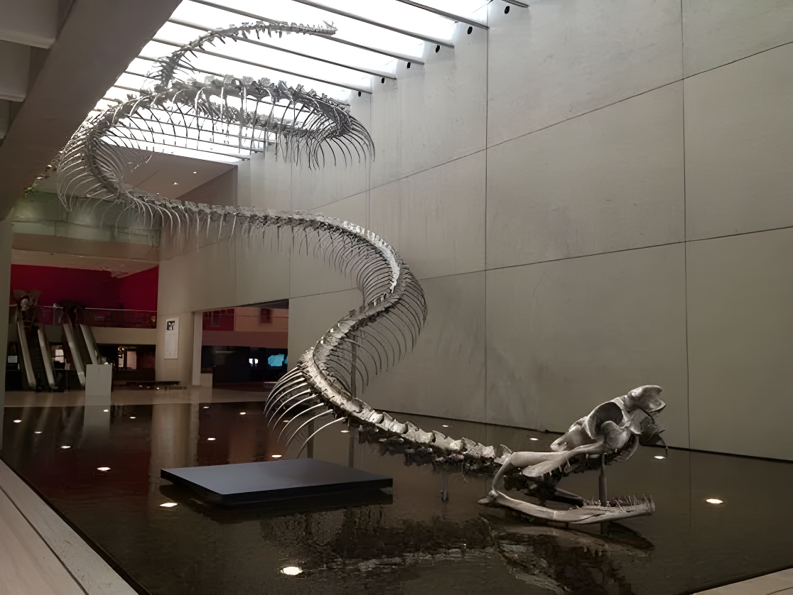
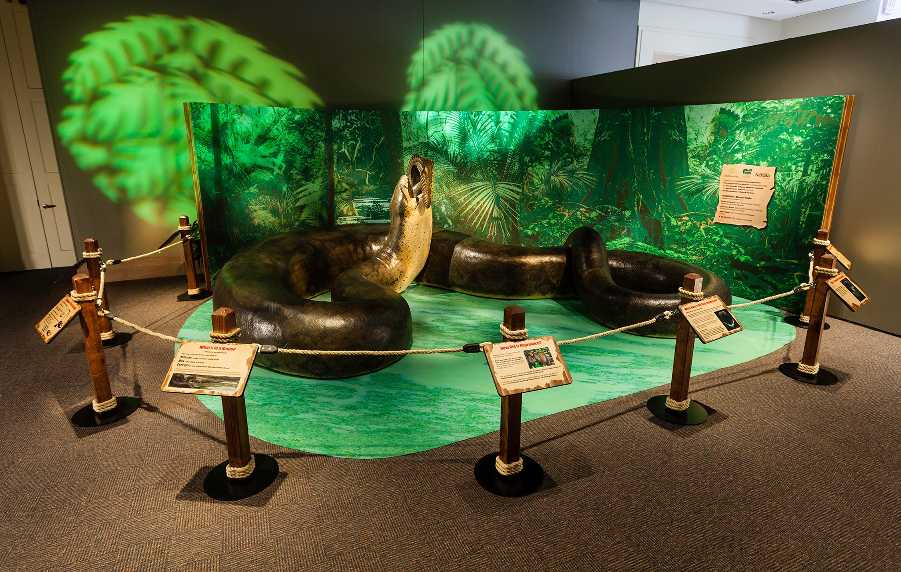

Titanoboa
Trăn Khổng Lồ kỷ Cổ Cận
Tổng quan
Kỷ
Paleogen
Họ
Boidae
Chi
Titanoboa
Dài
15.3 m
Nặng
1.3 tấn
Thức ăn

Titanoboa là một chi trăn từng sinh sống khoảng từ 60 tới 58 triệu năm trước, trong thế Paleocen. Loài duy nhất đã biết có danh pháp Titanoboa cerrejonensis, loài trăn to lớn nhất được phát hiện từ trước tới nay.
Nguồn: wikipedia.org
Phân bố
Khu vực Nam Mỹ
Thông tin thêm về Titanoboa
Kỷ nguyên và phân bố
Titanoboa là con quái vật giống loài trăn Nam Mỹ khổng lồ ngày nay, chúng đã từng trườn bò trong những cánh rừng và đầm lầy nhiệt đới cổ đại rộng lớn của Nam Mỹ cách đây khoảng từ 60 tới 58 triệu năm trước, sau thời điểm khủng long tuyệt chủng, trong thế Paleocen thuộc kỷ Paleogen. Hóa thạch loài trăn này đã được tìm thấy trong các mỏ than tại Cerrejón ở miền Bắc Colombia. Ở đó, vùng đầm lầy đã trở thành ngôi nhà của những động vật có kích thước không tưởng. Ngoài Titanoboa, nơi đây còn có những con rùa to bằng xe hơi nhỏ và những con cá sấu thậm chí còn lớn hơn ngày nay.
Tên khoa học
Titanoboa có nghĩa là “trăn khổng lồ” được đặt tên dựa vào kích thước to lớn của chúng. Tên loài duy nhất được biết có danh pháp là Titanoboa Cerrejonensis, tên khoa học này có nghĩa là con rắn lớn của vùng Cerrejón.
Kích thước và ngoại hình
Bằng cách so sánh kích thước và hình dáng cột sống đã hóa thạch của nó với cột sống của các loài trăn hiện đại, các nhà cổ sinh vật học ước tính con rắn khổng lồ Titanoboa này có thể phát triển đạt độ dài từ 12,8 mét đến 15,3 mét và nặng tới 1.3 tấn. Ngoài ra, phần dày nhất của cơ thể con rắn được cho là có đường kính là 1 mét. Trong khi loài rắn lớn nhất hiện nay được biết đến với độ dài khoảng 6,1m và nặng 227 kg. Titanoboa rõ ràng là một con rắn khổng lồ so với những con rắn lớn nhất mà chúng ta có ngày nay.
Và theo một nghiên cứu thuộc trường Đại học Florida (Mỹ), không chỉ sở hữu bộ hàm siêu to siêu khỏe với cú cắn được mệnh danh là "cú táp chết người" cùng khung xương rắn chắc, Titanoboa còn có thể xiết chặt những con mồi tới mức tan xương nát thịt hoặc bất cứ thứ gì nó cảm thấy gai mắt chỉ trong tích tắc.
Chế độ ăn và săn mồi
Theo suy đoán của các nhà khoa học, thực đơn của loài trăn khổng lồ này là những loài rắn nhỏ hơn, rùa, cá sấu khổng lồ và thậm chí cả những loài động vật có vú trên cạn. Nguồn thức ăn thuận lợi cộng thêm những điều kiện nhiệt độ ấm nóng, môi trường đầm lầy xanh mướt có thể là những yếu tố "nuôi dưỡng" cho loài rắn này phát triển có kích thước ngoại cỡ đến như vậy.
Phương thức săn mồi của chúng cũng rất linh hoạt. Không khác nào một con Anaconda ngày nay, chúng cũng dành phần lớn thời gian của mình dưới nước. Là một chuyên gia phục kích và một khi đã nhắm được con mồi, Titanoboa sẽ từ từ tiếp cận kẻ xấu số từ một vị trí không tưởng, thường là phía sau hoặc hai bên hông, rồi lao thẳng đến cùng cú táp trực diện và nhanh như cắt, rồi dùng cả thân mình to xác của mình cuộn tròn và siết chặt con mồi cho đến khi chúng tắt thở.
Khám phá
Năm 2004, các nhà khoa học đã đến vùng mỏ than Cerrejón và tìm được các mẫu vật xương hóa thạch của loài rùa và cá sấu khổng lồ từng sống tại đây. Quá trình kiếm tìm tiếp tục đến năm 2007. Khi sinh viên Alex Hastings của Trường đại học bang Florida (Mỹ), kiểm tra lại mẫu hóa thạch dán nhãn "cá sấu" và phát hiện đó là hóa thạch của một con rắn. Sau đó cả đội bắt đầu nghiên cứu lại hóa thạch và quay trở lại khu vực đã phát hiện mẩu xương này để tìm kiếm.
Năm 2012, có thêm một khám phá quan trọng khác về Titanoboa. Lần này, một hộp sọ rắn đã được tìm thấy. Đây là phát hiện cực kỳ hiếm, vì hộp sọ rắn rất mỏng manh và thường bị vỡ ra sau khi động vật chết. Sau hàng chục mẩu xương tìm thấy được, các nhà cổ sinh vật học kết nối dữ liệu và dựa vào các đốt sống và đưa ra kích thước của con rắn thời tiền sử, xác định đó là hóa thạch của loài rắn khổng lồ nhất từng tồn tại trong lịch sử: Titanoboa cerrejonensis.
